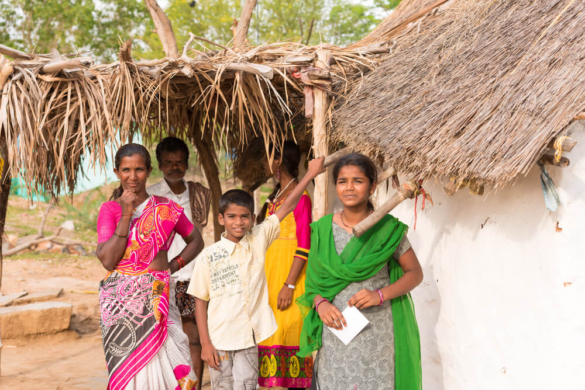

Who We Are
We are a group of socially-minded individuals from a spectrum of developed and developing countries around the world. We represent many different cultures, religions, ethnic background, and speak over a dozen spoken languages. Some of us are starting to dabble in the world of social causes, while others have generations of social work in our lineage. We have deep expertise in the areas of technical, medical, legal, arts and linguistics, and at DiyaHealth, we share a common cause to help make life saving healthcare decisions feasible for all.
